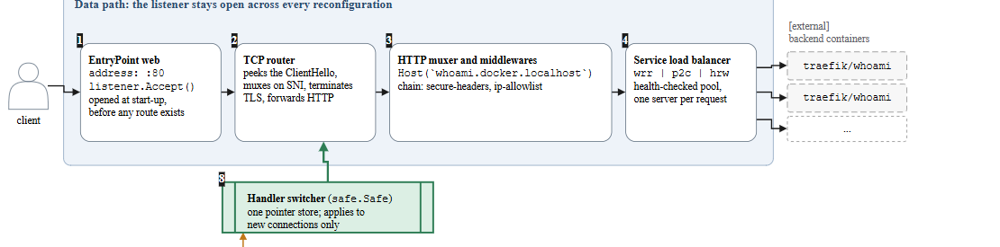
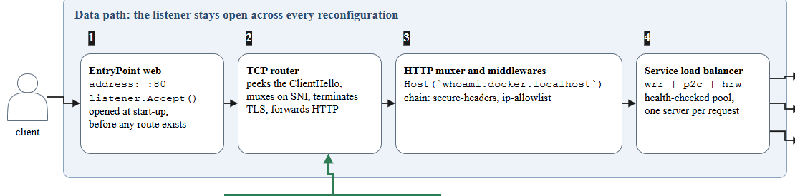
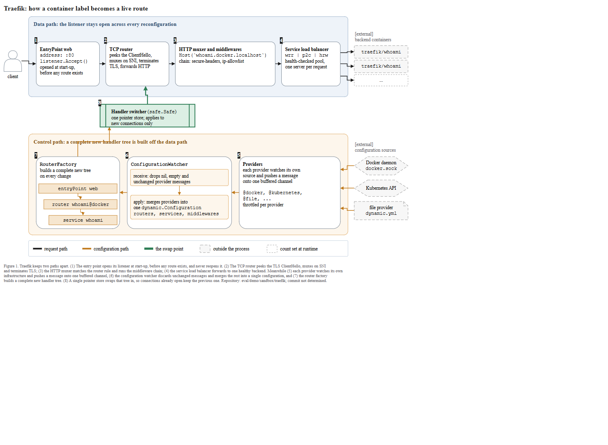
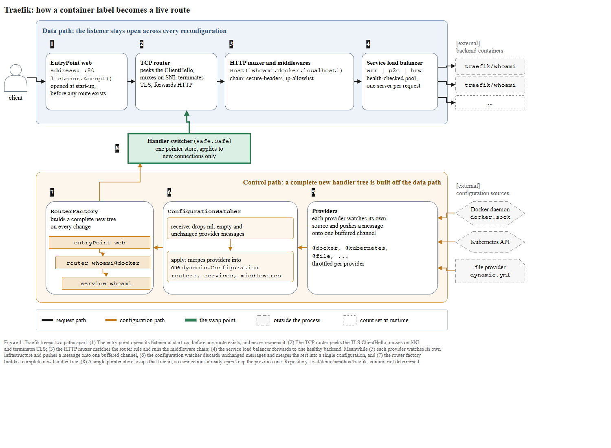
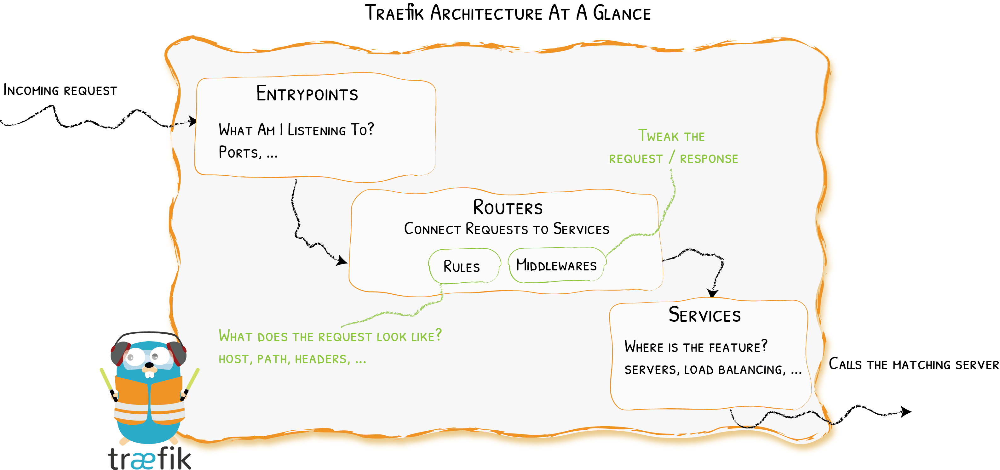

← 전체 목록← All cases · T2-2 · T2
Traefik — 데이터·제어 두 경로로 가른 런타임 프록시Traefik — a runtime proxy split into two paths, data and control
스킬 개발에 사용하지 않은 저장소이다. 저장소 코드만 입력으로 사용하였고, 정답지는 실행 종료 후 대조 목적으로만 열었다.A repository not used while developing the skill. The repository code was the only input; the answer key was opened after the run, for comparison only.
블라인드 조건Blind conditions
- 정답지는 저장소가 직접 그린 Architecture At A Glance 개념도이다. 이 저장소는 그 계열 그림을
docs/content/assets/img/traefik-architecture.png로 내부에 포함한다. 프롬프트는저자가 그린 아키텍처 그림을 웹에서 찾아보지 않는다
고 지시하였고, 리포트도 그 파일을deliberately not opened
라고 기록하였다.The answer key is the Architecture At A Glance concept diagram drawn by the repository itself. This repository includes that family of drawing internally asdocs/content/assets/img/traefik-architecture.png. The prompt instructeddo not look up the author's architecture drawing on the web
, and the report also records that file asdeliberately not opened
. Only files inside the repository were read. The project's documentation site was not visited.
코드만 참조하였다는 근거를 리포트가 직접 기록하였다.Only files inside the repository were read. The project's documentation site was not visited.
The report itself records the basis for having referenced only the code.- 커밋은 제공하지 않았다.
rev-parse --show-toplevel이 traefik 이 아니라paper-trail을 가리켰고,a wrong SHA is worse than none
판단에 따라 캡션에 commit not determined 를 넣고 경로만 기록하였다.No commit was provided.rev-parse --show-toplevelpointed not to traefik but topaper-trail, and following the judgment thata wrong SHA is worse than none
, the caption carries commit not determined with only the path recorded. - 저자 그림을 열지 않은 것은 스킬 체크리스트 43번(저장소가 이미 아키텍처를 그렸는지 확인·비교)을 알고서 벗어난 선택이다. 이 그림의 구성 요소는 전부 코드에서 도출하였다.Not opening the author's drawing is a choice made knowingly departing from item 43 of the skill checklist (check whether the repository has already drawn the architecture, and compare). Every component of this figure was derived from the code.
프롬프트Prompt
Scout 신규 세션에 아래 내용만 입력하였다. 무엇을 그릴지는 지정하지 않았다.This was the only input to a fresh Scout session. What to draw was never specified. The run was driven by the Korean original; the English below is a rendering of it.
/method-figure C:\Users\youngseolee\OneDrive - Microsoft\Desktop\work\code\paper-trail\eval\demo\sandbox\traefik 이 저장소를 읽고 이 프로젝트가 어떻게 동작하는지 보여주는 아키텍처 그림을 만들어줘. 지켜야 할 것: - 이 저장소의 코드와 문서에서만 읽는다. 이 프로젝트의 공식 문서 사이트나 저자가 그린 아키텍처 그림을 웹에서 찾아보지 않는다. 무엇을 그릴지는 저장소가 정한다. - 산출물은 전부 이 폴더에 쓴다: C:\Users\youngseolee\OneDrive - Microsoft\Desktop\work\code\paper-trail\out\demo\traefik\run\ figure.drawio, fig.html, report.md, evidence.json (evidence.py 가 뽑은 재료 원문), render.png (최종 그림을 렌더한 PNG), render-r1.png (독립 시각 게이트를 처음 통과시키기 전 시점의 렌더). 게이트가 한 번에 통과하면 render-r1.png 는 만들지 않아도 된다. - report.md 에는 돌린 검사의 stdout 을 그대로 붙이고, 게이트마다 통과/실패와 몇 라운드 만에 통과했는지 적는다. 스킬에서 모호했거나 따를 수 없었던 것도 적는다./method-figure C:\Users\youngseolee\OneDrive - Microsoft\Desktop\work\code\paper-trail\eval\demo\sandbox\traefik Read this repository and produce an architecture figure showing how this project works. Follow these rules: - Read only from this repository's code and docs. Do not look up this project's official documentation site or architecture figures drawn by the authors on the web. The repository decides what to draw. - Write all outputs to this folder: C:\Users\youngseolee\OneDrive - Microsoft\Desktop\work\code\paper-trail\out\demo\traefik\run\ figure.drawio, fig.html, report.md, evidence.json (the raw material extracted by evidence.py), render.png (a PNG render of the final figure), render-r1.png (the render right before the independent visual gate first passed it). If the gate passes on the first try, you don't need to produce render-r1.png. - In report.md, paste the stdout of the checks you ran verbatim, and note pass/fail for each gate and how many rounds it took to pass. Also note anything in the skill that was ambiguous or that you couldn't follow.
실행 경과The run
캡처 프레임 116장 중 8장을 선별하였다.8 of 116 captured frames were selected. 좌우 방향키로 이동한다.Use the left and right arrow keys to move.
게이트 4종 결과Results at the four gates
| 게이트Gate | 결과Result | 라운드Round | 검출 내용What it found |
|---|---|---|---|
| ① 렌더① Render | 통과pass | 1 | XML 파싱 + 뷰어 빌드XML parse + viewer build |
② check_layout.py --max 6 | ok (엣지 라벨 0)ok (0 edge labels) | 3 | 캡션이 한 줄이라 4932px 로 측정 → 4개로 줄바꿈; 고아 배지·서브셀 다수 → 로드밸런서 백엔드 3상자·엣지와 트리 엣지로 실배선; 화살표 z-order 1건The caption is a single line, so it measured 4932px → wrapped with 4 ; numerous orphan badges and sub-cells → rewired the load balancer's 3 backend boxes and edges and the tree edges; 1 arrow z-order case |
③ check_render.js | flags: [] | 2 | 번호 배지 8개가 onborder → 각 행 위 빈 띠로; 스위처 외곽선·라벨이 online 2건 → process 모양을 사각형으로8 numbered badges were onborder → moved to an empty band above each row; 2 cases where the switcher outline/label were online → the process shape to a rectangle |
| ④ 독립 시각 게이트④ independent visual gate | GATE: PASS | 1 (첫 라운드)1 (first round) | C1 FAIL: Data path/Control path 존과 번호 배지 1–8 이 순서 장치 둘로 읽힘. 미수정: 존을 지우면 두 경로 분리 주장이 사라지므로 근거만 기록C1 FAIL: the Data path/Control path zones and the numbered badges 1–8 were read as two competing ordering devices. Not fixed: removing the zones would erase the claim that the two paths are separated, so only the rationale was recorded |
게이트 ③ 와 육안 점검이 바꾼 것What gate ③ and the visual check changed
이 케이스의 before/after 는 게이트 ④ 재수정이 아니다. 게이트 ④ 는 첫 라운드에 통과하였다. render-r1.png 은 프롬프트가 정의한 독립 시각 게이트를 처음 통과시키기 전 시점의 렌더
, 곧 기계 시각 검사 check_render.js 1라운드 직후의 그림이다. 그 1라운드가 배지 8개를 onborder, 스위처를 online 2건으로 검출하였고, 어떤 체커도 검출하지 못한 '제어 존 제목이 화살표를 가로지름'을 육안으로 추가 확인하였다. 세 건을 수정한 render.png 가 곧바로 게이트 ④ 를 통과하였다.The before/after for this case is not a gate-④ re-fix. Gate ④ passed on the first round. render-r1.png is the render right after the prompt-defined render at the point before it first passes the independent visual gate
, that is, immediately after round 1 of the machine visual check check_render.js. That round 1 detected 8 badges as onborder and 2 cases of the switcher as online, and it additionally confirmed by eye a 'control-zone title crossing an arrow' that no checker detected. render.png, with the three issues fixed, passed gate ④ immediately.

process 모양이라 외곽선이 화살표로 세어지고, 제어 경로 존 제목은 RouterFactory → 스위처 화살표에 겹쳐 지나간다.③ round 1 (render-r1) — Numbered badges 1–8 straddle the top-left corner of each box, so they read as belonging to neither side. The switcher is a process shape, so its outline is counted as an arrow, and the control-path zone title overlaps the RouterFactory → switcher arrow.
align=right 로 옮겨 화살표를 피한다.final (gate ④ pass) — The eight badges move up into an empty band above each row (badge 8 into the corridor between zones), and the switcher becomes a rectangle with a 3px green border. The zone title is moved to align=right to avoid the arrow.

최종 산출물Final output
산출물은 이미지가 아니라 draw.io XML 이다. 확대·이동이 가능하며 내려받아 수정할 수 있다.The output is draw.io XML, not an image. It zooms and pans, and it can be downloaded and edited.
figure.drawio · report.md · 뷰어 새 창Viewer in a new tab
정답지 대조Against the answer key

| 항목Element | 정답지Answer key | 산출물Our figure | 비고Note |
|---|---|---|---|
| 전체 구성Overall composition | 요청 한 줄: Entrypoints → Routers → Services, 손그림 3상자One-line request: Entrypoints → Routers → Services, 3-box hand drawing | 데이터 경로(리스너 상시 개방) + 제어 경로(트리 재빌드) 2존 8상자Data path (listener always open) + control path (tree rebuild), 2 zones, 8 boxes | 정답지는 개념 요청 경로만 담고, 산출물은 코드에서 재구성 경로까지 도출해 두 평면으로 구성하였다.The answer key holds only the concept-request path, while the output derives the reconfiguration path from the code as well, forming two planes. |
| 진입점Entrypoint | Entrypoints — What Am I Listening To? Ports, ... | EntryPoint web, address: :80, listener.Accept(), opened at start-up before any route exists | 개념 질문 대 실제 식별자·시점: server.go 에서 리스너가 watcher 앞에서 열린다.A concept question versus real identifiers and timing: in server.go the listener is opened before the watcher. |
| 라우터Router | Routers — Connect Requests to Services+ Rules · Middlewares · host/path/headers | TCP router(ClientHello/SNI/TLS) → HTTP muxer, Host(`whoami.docker.localhost`) | 정답지의 한 상자를 TCP·HTTP 두 단계로 분해하고 실제 라우터 규칙까지 반영하였다.It breaks the answer key's single box into two stages, TCP and HTTP, and reflects the actual router rules as well. |
| 미들웨어Middleware | 라우터 안 초록 알약 Middlewares — Tweak the request / responseA green pill inside the router, Middlewares — Tweak the request / response | HTTP muxer 상자 안 chain: secure-headers, ip-allowlist 한 줄One line inside the HTTP muxer box, chain: secure-headers, ip-allowlist | 둘 다 라우터에 귀속되며, 산출물은 docker/ 가이드의 실제 체인 이름을 사용하였다.Both attribute it to the router, and the output uses the actual chain names from the docker/ guide. |
| 서비스Service | Services — Where is the feature? servers, load balancing | Service load balancer wrr | p2c | hrw, health-checked pool + backend 3상자(traefik/whoami)Service load balancer wrr | p2c | hrw, health-checked pool + 3 backend boxes (traefik/whoami) | 정답지는 개념 상자만 두고, 산출물은 전략 이름과 백엔드 팬아웃까지 형태로 나타냈다.The answer key has only a concept box, while the output renders it down to the strategy names and the backend fan-out. |
| 설정·프로바이더Configuration/providers | 없음none | Providers(@docker, @kubernetes, @file, ...) → ConfigurationWatcher → RouterFactory | 정답지에 없는 제어 경로를 코드 근거로 추가하였다 (aggregator.go, configurationwatcher.go)It adds the control path absent from the answer key, grounded in the code (aggregator.go, configurationwatcher.go) |
| 핸들러 스왑Handler swap | 없음none | Handler switcher (safe.Safe), 초록 스왑 화살표, new connections only Handler switcher (safe.Safe), a green swap arrow, new connections only | 재구성이 라이브 라우트에 어떻게 반영되는지 보여주며, 정답지에는 없는 핵심 정보이다.It shows how a reconfiguration is reflected onto the live route, key information absent from the answer key. |
| 진입 트리거Entry trigger | Incoming request물결선 → / Calls the matching server Incoming requestwavy line → / Calls the matching server | client 아이콘 → EntryPoint (검은 요청 화살표)client icon → EntryPoint (black request arrow) | 진입 표현은 동일하며, 산출물은 요청 경로를 실제 엣지로 그렸다.The entry representation is the same, and the output draws the request path as an actual edge. |